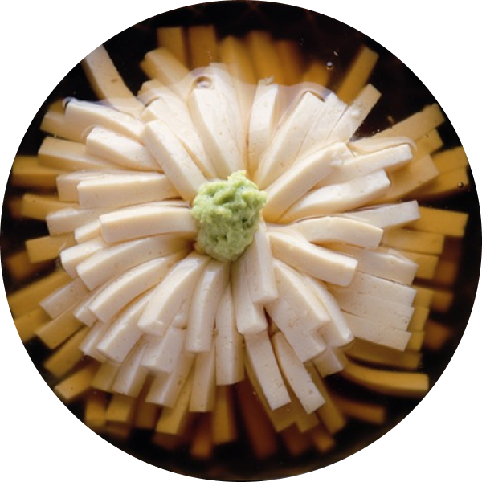

華豆腐
大啖涼拌豆腐的時節已經過了，而吃湯豆腐的時節卻還沒到，此時就是享受「燴汁豆腐」的最佳時機。華豆腐也是燴汁豆腐的一種。江戶最知名的燴汁豆腐出自「笹乃雪」，這間位於上野山麓下谷根岸的豆腐料理店，創業於元祿年間，至今依舊是人氣不墜的經典老鋪。其最具代表性的料理，就是在溫熱嫩豆腐淋上葛湯芡汁的燴汁豆腐。華豆腐，也是燴汁豆腐的一種，出自於料理書黑白精味集。華，就是花的意思，顧名思義，華豆腐的外型宛如大朵菊花盛開，視覺上極為美觀。黑白精味集中提到「任豆腐花瓣綻放於盤裡，於正中間點綴山葵泥，或放上雕花的紅色寒天，美不勝收。」